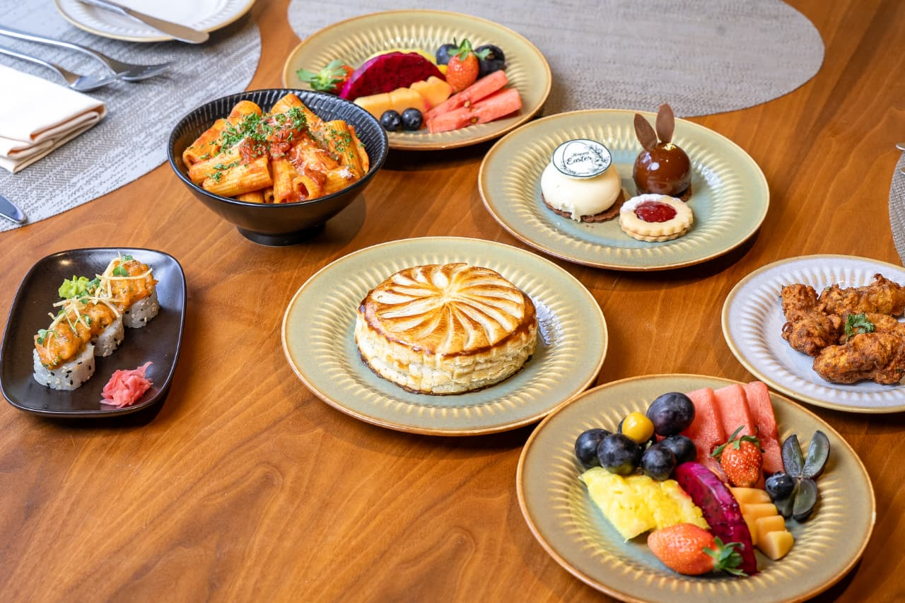
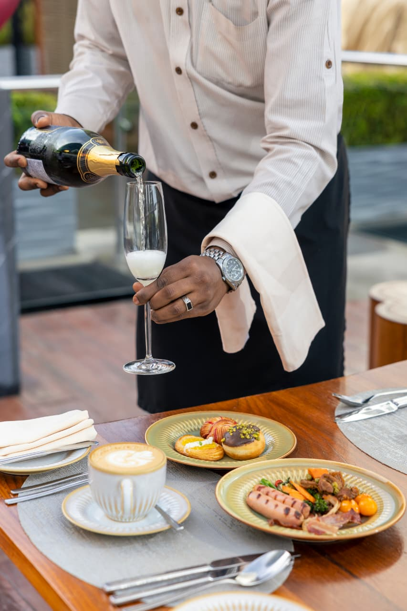
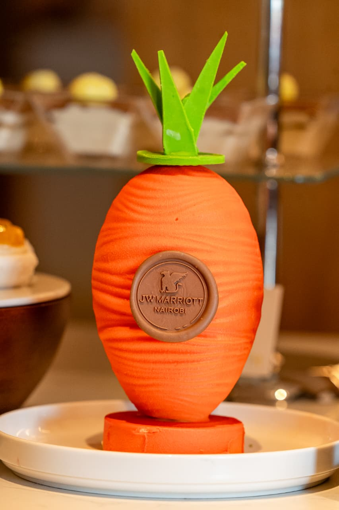

🎥
Video Production
Planning, producing, filming, and editing video content for ads, campaigns, hospitality brands, social media, and digital platforms.
Joyce Njeri Thiong’o is a Nairobi-based creative producer, content creator, and digital media specialist focused on polished video production, social media storytelling, and brand visibility.
Joyce creates refined multimedia content that helps brands connect with audiences through clear visuals, thoughtful production, and consistent messaging.
With a Bachelor of Arts in Communication and Journalism from St. Paul’s University, Joyce brings a strong mix of media training, creative direction, digital strategy, and production experience to each project.
Her work includes developing social media campaigns, producing visual content, supporting brand engagement, editing videos, monitoring performance, and creating content that feels polished, intentional, and audience-focused.
Professional creative support for brands that need polished visuals, consistent messaging, and content built for digital audiences.
Planning, producing, filming, and editing video content for ads, campaigns, hospitality brands, social media, and digital platforms.
Creating, scheduling, and managing content across Instagram, Facebook, and TikTok to support brand consistency and audience engagement.
Developing visual narratives, captions, campaign concepts, and digital messaging that communicate a brand’s personality with clarity and style.
A highlighted production project showcasing Joyce’s work as a producer and visual storyteller.
In May 2026, Joyce produced a visual scene at JW Marriott in Nairobi, capturing the hotel’s elegance, luxury atmosphere, and refined design through a polished creative production.
The hotel is a beautiful space, and Joyce’s production helped bring that beauty to an internet audience through thoughtful scene direction, behind-the-scenes storytelling, and strong visual presentation.
The photos below are stills from the behind-the-scenes moments of the project, showing the creative process behind the final production.



A concise snapshot of Joyce’s media, social strategy, and content production background.
Developed and executed social media strategies across Instagram, Facebook, and TikTok; created multimedia content and advertisements; monitored analytics; and helped improve brand visibility and engagement.
Produced video content, supported visual storytelling, edited media for online platforms, and helped brands present their work in a polished and engaging way.
Completed at St. Paul’s University, with coursework in communication and media writing, public relations, broadcast journalism, digital media, and media law.
For collaborations, content production, social media work, hospitality campaigns, or brand storytelling projects, contact Joyce directly.
Joyce’s portfolio highlights production work, digital storytelling, social media strategy, and visual content designed to help brands look polished and memorable online.
Her work is especially suited for hospitality, lifestyle, brand campaigns, social media content, behind-the-scenes production, and short-form digital video.